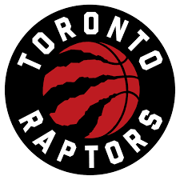

Toronto Raptors
|  |
O Toronto Raptors é uma equipe de basquete da NBA com sede em Toronto, Canadá. Fundada em 1995, a equipe é a única franquia da NBA fora dos Estados Unidos. Os Raptors se tornaram notáveis pelo sucesso nas temporadas recentes, culminando na conquista do título da NBA em 2019, liderados por estrelas como Kawhi Leonard. A conquista do campeonato marcou um marco importante para o basquete canadense e solidificou a posição dos Raptors na elite da liga. Os Raptors tiveram dificuldades em seus primeiros anos, mas após a aquisição de Vince Carter por meio de uma negociação no dia do draft em 1998 , a franquia estabeleceu recordes de público na liga e chegou aos playoffs da NBA em 2000 , 2001 e 2002 . Carter foi fundamental para levar o time à primeira vitória nos playoffs em 2001. Depois da saída de Carter, a equipe ficou 5 anos vem avanços significativos, sofrendo uma reformulação no elenco conseguindo se classificar e capturando o título da Divisão do Atlântico. A equipe conseguiu alguns títulos de algumas divisões mas sempre fracassou nos seus avanços nos torneios da NBA, provocando sempre uma alteração no seu elenco de jogadores e técnicos.Os Raptors têm uma base de fãs leal e apaixonada e jogam no Scotiabank Arena, localizado no coração de Toronto. Sua história recente de sucesso e a atmosfera vibrante dos jogos fizeram com que os Raptors se tornassem uma parte integral da cultura esportiva canadense e uma força competitiva na NBA. |